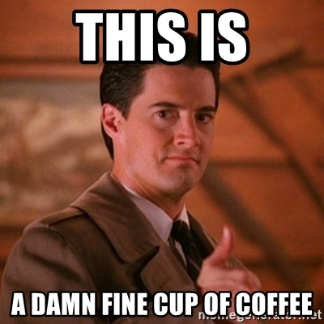

3.2 Sharp Null
Suppose that you are evaluating the effect of coffee on students’ alertness in class.

Coffee Cup
3.2.1 Questions of Alertness
You reason that drinking coffee will increase students’ alertness in class. Why?
- Question of why are inherently theoretical questions
- Can you produce several theories about why coffee might increase alertness in class?
- What data might you be able to produce that would allow you to “drive a wedge” between the different theories?
- This ability to proactively deign an experiment to distinguish between theories is the goal you’re striving to achieve, and it is very hard to accomplish.
3.2.2 Stating the sharp null
- What is the sharp null hypothesis that is at risk in this investigation?
- How, if at all, does this sharp null differ from the null hypothesis you might be more familiar with?
- Is the sharp null hypothesis a concept that ever makes sense? Is the sharp null hypothesis a concept that is ever, actually, true?